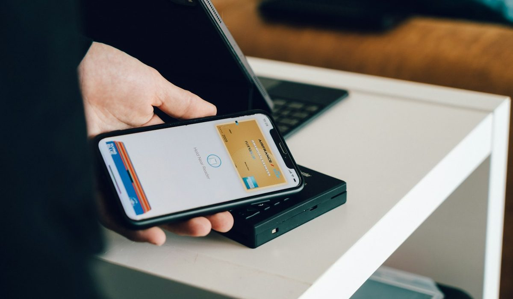
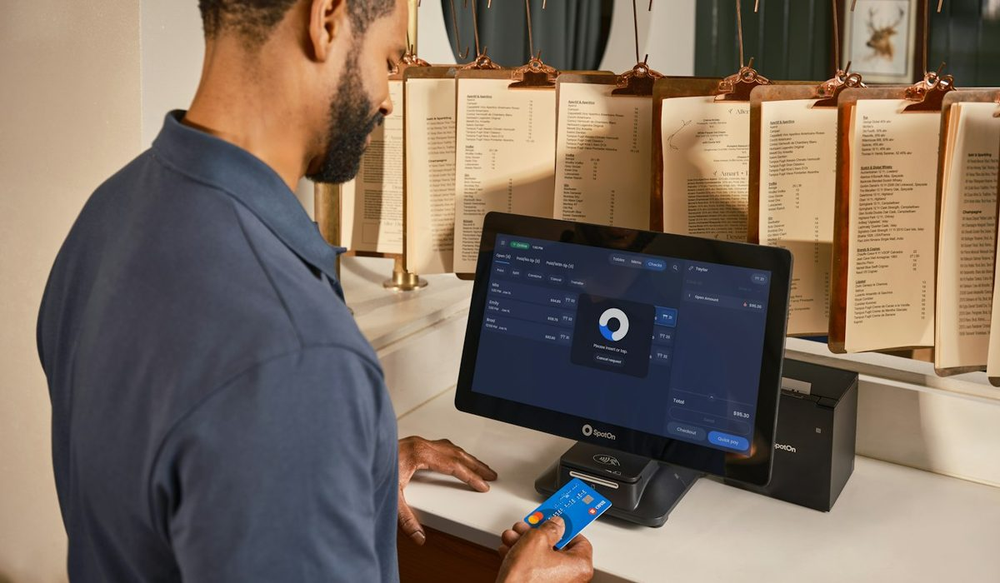

En bref
Entre les deux, Nickel l'emporte avec 8,7/10 (relevé de démonstration) contre 8,1/10 pour N26, grâce à l'accessibilité. Nickel ouvre sans condition de revenus ni justificatif de domicile, accepte les personnes fichées et donne accès à plus de 8 600 points de vente pour les espèces. N26 gagne nettement le prix, avec un compte Standard à 0 € contre 25 € par an, et l'application, plus complète et plus agréable au quotidien.
- N26 Standard est gratuit, Nickel Classic coûte 25 € par an
- Au plus haut de gamme, N26 Metal revient à 202,80 € par an, Nickel Metal à 105 €
- Nickel accepte les interdits bancaires et les personnes fichées à la Banque de France, N26 ne publie pas de règle sur ce point
- Le dépôt d'espèces chez Nickel coûte 3 % du montant, gratuit seulement avec Metal
- Les deux comptes fonctionnent sans découvert et sans condition de revenus
Sommaire de ce comparatif
Nos critères et leur poids
Nickel et N26 ne répondent pas au même besoin. L'un s'adresse d'abord à ceux qu'une banque classique refuse, l'autre à ceux qui veulent un compte gratuit et une bonne application. Pour les départager honnêtement, nous avons gardé exactement la grille de notre classement des comptes sans condition de revenus, avec les mêmes poids.
| Critère | Poids | Nickel | N26 |
|---|---|---|---|
| Accessibilité | 35 % | 9,8 | 7,4 |
| Prix | 25 % | 7,6 | 9,0 |
| Ouverture | 20 % | 9,0 | 8,0 |
| Services et application | 20 % | 7,8 | 8,4 |
| Note globale | 100 % | 8,7 | 8,1 |
Note globale égale à la moyenne pondérée des quatre critères. Notes et tarifs, relevé de démonstration de la rédaction, octobre 2026.
N26 gagne deux critères sur quatre, le prix et les services. Nickel gagne les deux autres, et l'accessibilité pèse le plus lourd dans notre grille parce que c'est la question que se posent la plupart des lecteurs qui comparent ces deux comptes. Avec un poids plus fort sur le prix, N26 passerait devant. Nous le disons d'emblée.
Nickel et N26 offre par offre
Les deux marques déclinent leur compte en plusieurs cartes. Nickel facture une cotisation de 25 € par an à laquelle s'ajoute le prix de la carte, N26 facture un abonnement mensuel.
01 Le plus accessible25 € par an, fichés acceptés8,7/10
Le plus accessible25 € par an, fichés acceptés8,7/10
Le plus accessible25 € par an, fichés acceptés8,7/1002 La troisième voieStandard gratuit, Plus à 3,99 € par mois8,2/10
La troisième voieStandard gratuit, Plus à 3,99 € par mois8,2/10
La troisième voieStandard gratuit, Plus à 3,99 € par mois8,2/1003 Le moins cherStandard à 0 €, sans condition8,1/10
Le moins cherStandard à 0 €, sans condition8,1/10
Le moins cherStandard à 0 €, sans condition8,1/10Revolut figure sur le podium parce qu'il se glisse entre les deux dans notre classement général, avec 8,2/10. Si vous hésitez entre Nickel et N26 pour une raison d'application, regardez-le aussi.
| Offre | Note /10 | Prix | Coût sur un an | Espèces | Le point fort |
|---|---|---|---|---|---|
| Nickel ClassicNotre choix | 8,7 | 25 € par an | 25 € | Dépôt en point de vente, 3 % | Le compte Nickel le moins cher |
| Nickel Chrome | 8,7 | 55 € par an | 55 € | Dépôt en point de vente, 3 % | Paiements hors zone SEPA sans frais |
| Nickel Metal | 8,7 | 105 € par an | 105 € | Dépôt en point de vente, gratuit | Dépôts et retraits gratuits |
| N26 Standard | 8,1 | 0 € | 0 € | non publié | Gratuit, sans condition de revenus |
| N26 Smart | 8,1 | 4,90 € par mois | 58,80 € | non publié | Le premier palier payant |
| N26 You | 8,1 | 9,90 € par mois | 118,80 € | non publié | Le palier intermédiaire |
| N26 Metal | 8,1 | 16,90 € par mois | 202,80 € | non publié | La carte haut de gamme de N26 |
Note de la marque, identique pour toutes ses offres. Prix de l'abonnement hors frais à l'usage. Notes et tarifs, relevé de démonstration de la rédaction, octobre 2026.
Au premier niveau, l'écart est de 25 € par an en faveur de N26. Au milieu de gamme, Nickel Chrome à 55 € par an coûte un peu moins que N26 Smart à 58,80 €. Au sommet, Nickel Metal à 105 € par an revient presque deux fois moins cher que N26 Metal à 202,80 €. La comparaison de prix dépend donc du niveau de carte, mais la plupart des gens prennent l'offre d'entrée, et là N26 gagne.
Le prix, N26 gagne sans discussion
Zéro euro contre vingt-cinq. Sur l'offre que choisissent la majorité des clients, N26 Standard est gratuit et sans condition de revenus, Nickel Classic coûte 25 € par an. Sur cinq ans, cela fait 125 € d'écart, à usage identique.

Les frais à l'usage pèsent aussi. Chez Nickel, un retrait au distributeur en France ou en zone SEPA coûte 1,50 € avec les cartes Classic et Chrome, un rejet de prélèvement 10 €, un dépôt d'espèces 3 % du montant. Seule la carte Metal efface les frais de retrait et de dépôt. Nickel ne prend en revanche aucune commission de change.
Notre avis est net. Si vous n'avez aucun problème pour ouvrir un compte en ligne et que vous ne manipulez pas d'espèces, payer 25 € par an pour Nickel n'a pas beaucoup de sens. N26 fait le travail pour rien.
L'application, N26 devant
N26 a construit sa réputation sur son application, et elle tient la promesse. C'est le cœur du produit, pas un complément, et l'expérience est plus fluide que chez Nickel. Pour qui gère tout depuis son téléphone, la différence se sent dès la première semaine.
L'application Nickel couvre le quotidien, solde, historique, virements, blocage de la carte. Elle reste moins riche que celles de N26 ou de Revolut, et le service est pensé autant autour du point de vente que de l'écran. Pour un client qui ne passe jamais chez un buraliste, cette moitié du produit ne sert à rien.
N26 est une application qui a un compte. Nickel est un compte qui a une application.
Côté chèques, Nickel ne fournit pas de chéquier mais encaisse un chèque reçu pour 3 €, ce qui dépanne pour un remboursement ou une caution rendue.
Accessibilité, espèces, ouverture, là où Nickel reprend la main
Tout bascule si votre dossier est compliqué. Nickel ouvre sans condition de revenus, sans justificatif de domicile, sans dépôt minimum, et accepte les interdits bancaires comme les personnes fichées à la Banque de France. Il faut une pièce d'identité et un numéro de téléphone. N26 ne demande pas de revenus non plus, mais ne publie aucune règle sur les personnes fichées. Quand on a déjà essuyé un refus, cette différence compte plus que 25 €.
Les espèces sont l'autre terrain de Nickel. Le compte s'appuie sur plus de 8 600 points de vente revendiqués par la marque, chez des buralistes, où l'on dépose et retire du liquide. Le dépôt coûte 3 %, ce qui reste cher, mais N26 n'offre aucun réseau équivalent dans les informations publiées.

L'ouverture penche aussi vers Nickel. La pré-inscription en ligne prend environ 5 minutes, puis la carte et le RIB français se récupèrent en point de vente, ou se reçoivent à domicile. Chez N26, tout se passe dans l'application et la carte arrive par courrier. Si vous avez besoin d'une carte en main dans la journée, Nickel est le seul des deux à le proposer.
Nickel ou N26, comment choisir
Si vous êtes fiché ou sans justificatif de domicile
Nickel. C'est la raison d'être du compte, et la seule situation où il gagne sans débat. Comptez 25 € par an.
Si vous voulez simplement un compte gratuit
N26 Standard. Gratuit, sans condition de revenus, avec une application plus agréable que celle de Nickel. Hello One de Hello bank! et Revolut Standard jouent dans la même catégorie.
Si vous êtes payé en partie en espèces
Nickel, en surveillant les montants. À 3 % par dépôt, 500 € déposés chaque mois coûtent 180 € par an. Au-delà, la carte Metal à 105 € par an, qui rend le dépôt gratuit, devient rentable.
Si vous voyagez souvent
Comparez les hauts de gamme. Nickel Chrome supprime les frais de paiement hors zone SEPA pour 55 € par an, et Nickel ne prend aucune commission de change. N26 Metal coûte 202,80 € par an, à réserver à ceux qui en exploitent vraiment les services.
Notre verdict
Nickel l'emporte avec 8,7/10 contre 8,1/10 pour N26, sur la seule force de son accessibilité, de ses points de vente et d'une ouverture qui met une carte en main le jour même. N26 gagne le prix et l'application, et ce n'est pas un détail.
Si votre priorité est d'obtenir un compte malgré un fichage ou sans domicile stable, prenez Nickel. Si votre priorité est de ne rien payer et de tout gérer depuis votre téléphone, prenez N26 Standard.
Questions fréquentes
Nickel ou N26, lequel est le moins cher ?
N26 est moins cher sur l'offre d'entrée, N26 Standard est gratuit alors que Nickel Classic coûte 25 € par an. Au sommet de gamme, l'ordre s'inverse, Nickel Metal coûte 105 € par an contre 202,80 € pour N26 Metal à 16,90 € par mois.
N26 accepte-t-il les personnes fichées à la Banque de France ?
N26 ne publie pas de règle sur l'ouverture d'un compte aux personnes inscrites au FICP ou au FCC. Nickel, à l'inverse, indique sur sa page d'aide officielle accepter les interdits bancaires et les personnes fichées, pour 25 € par an.
Peut-on déposer des espèces sur un compte N26 ?
Aucune solution de dépôt d'espèces N26 ne figure dans les informations que nous avons relevées. Nickel accepte les dépôts dans plus de 8 600 points de vente revendiqués, contre 3 % du montant, gratuitement avec la carte Metal à 105 € par an.
Quelle application est la meilleure, Nickel ou N26 ?
L'application N26 est plus complète et plus agréable que celle de Nickel, c'est le cœur de son offre. L'application Nickel couvre le quotidien, solde, virements et blocage de la carte, mais reste moins riche que celles de N26 et de Revolut.
Nickel et N26 proposent-ils un découvert ?
Non. Les deux comptes fonctionnent sans découvert, Nickel avec une carte à autorisation systématique qui vérifie le solde à chaque paiement. Ni l'un ni l'autre ne facture donc d'agios.
Comment sont notés les comptes ?
Les notes sont un relevé de démonstration sur cinq critères, l'accessibilité, le prix, l'ouverture, les services et la note globale qui les synthétise. Dans ce versus, l'accessibilité pèse 35 %, le prix 25 %, l'ouverture 20 % et les services 20 %, la même grille que notre classement des comptes sans condition de revenus. Nickel obtient 8,7/10 et N26 8,1/10.
Notre méthode
Ce comparatif repose sur des données publiques, vérifiables une par une, et sur des critères affichés avant le classement.
- Les tarifs sont relevés dans les plaquettes tarifaires et les pages officielles des établissements, frais de tenue de compte et de carte compris
- Les conditions d'ouverture (revenus, âge, justificatifs, délai) sont vérifiées sur le parcours d'ouverture de chaque offre
- Les plafonds réglementaires (frais d'incident, offre clientèle fragile, droit au compte) sont ceux publiés par la Banque de France et service-public.fr
- Les avis clients sont lus sur les stores d'applications et Trustpilot, en retenant les motifs récurrents plutôt que la note seule
- Chaque critère est noté sur 10 et la grille de notation est identique d'un comparatif à l'autre